Ability Tree Strategies Mutagen Branch
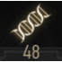Mutagen Branch
{kind=link}
This branch simply lists all the Mutagens you have successfully collected, or created into Mutagens of a different size or color. The following chart lists all available Mutagens that can be used in conjunction with Activated Abilities (that are in your “slots”) to provide statistic bonuses for Geralt, as well as the type of creatures that may possess them. The chart concludes with a list of Lesser, Regular, and Greater Mutagens, and their effects.
{kind=link}
| Icon | Mutagen Name | Bonus | Price | Weight |
|---|---|---|---|---|
| 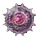 | Katakan Mutagen | +5% Attack power | 20 | 0.1 |
| Arachas Mutagen | +50 Vitality | 20 | 0.1 | |
| 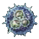 | Cockatrice Mutagen | +5% Sign Intensity | 20 | 0.1 |
| Archgriffin Mutagen | +5% Attack power | 20 | 0.1 | |
| Griffin Mutagen | +50 Vitality | 20 | 0.1 | |
| Water Hag Mutagen | +5% Sign Intensity | 20 | 0.1 | |
| Nightwraith Mutagen | +50 Vitality | 20 | 0.1 | |
| Ekimmara Mutagen | +50 Vitality | 20 | 0.1 | |
| Chort Mutagen | +5% Sign Intensity | 20 | 0.1 | |
| Foglet Mutagen | +5% Sign Intensity | 20 | 0.1 | |
| Wyvern Mutagen | +5% Attack power | 20 | 0.1 | |
| Doppler Mutagen | +5% Attack power | 20 | 0.1 | |
| Troll Mutagen | +50 Vitality | 20 | 0.1 | |
| Noonwraith Mutagen | +50 Vitality | 20 | 0.1 | |
| Succubus Mutagen | +5% Attack power | 20 | 0.1 | |
| Greater Foglet Mutagen | +5% Attack power | 20 | 0.1 | |
| Fiend Mutagen | +50 Vitality | 20 | 0.1 | |
| Forktail mutagen | +5% Sign Intensity | 20 | 0.1 | |
| Grave Hag Mutagen | +50 Vitality | 20 | 0.1 | |
| Wraith Mutagen | +50 Vitality | 20 | 0.1 | |
| Earth Elemental Mutagen | +5% Sign Intensity | 20 | 0.1 | |
| Ekhidna Mutagen | +5% Sign Intensity | 20 | 0.1 | |
| Ancient Leshen Mutagen | +5% Sign Intensity | 20 | 0.1 | |
| Basilisk Mutagen | +5% Sign Intensity | 20 | 0.1 | |
| Werewolf Mutagen | +5% Attack power | 20 | 0.1 | |
| Nekker Warrior Mutagen | +5% Attack power | 20 | 0.1 | |
| Leshen Mutagen | +5% Sign Intensity | 20 | 0.1 | |
| Lesser Red Mutagen | +5% Attack power | 20 | 0.1 | |
| Lesser Blue Mutagen | +5% Sign Intensity | 20 | 0.1 | |
| Lesser Green Mutagen | +50 Vitality | 20 | 0.1 | |
| Red Mutagen | +7% Attack power | 20 | 0.1 | |
| Blue Mutagen | +7% Sign Intensity | 20 | 0.1 | |
| Green Mutagen | +100 Vitality | 20 | 0.1 | |
| Greater Red Mutagen | +10% Attack power | 20 | 0.1 | |
| Greater Blue Mutagen | +10% Sign Intensity | 20 | 0.1 | |
| Greater Green Mutagen | +150 Vitality | 20 | 0.1 |
{kind=link}
{kind=link}
{kind=link}
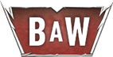 Mutations Panel Menu
{kind=link}
Your adventures through the Duchy of Toussaint net you more than some fine wines and a series of gruesome murder-mysteries to solve. It is here, after completing Blood and Wine: Secondary Quest: Turn and Face the Strange, that you are able to finally unlock the full potential of your Mutations!
{kind=link}
The Mutations Menu
The Character Menu screen now has an additional area of interest: the Mutations menu, where you can invest ability points and mutagens in order to develop brand new mutations. This eventually leads to four “Levels” of mutation research. Furthermore, you have one of 12 exceptional mutations you can pick from, which influences your various Combat, Signs, Alchemy, or a combination of abilities.
Researching Mutations: The Mutations Tree Menu
Researching Mutations requires a great deal of Ability Points and Greater Mutagens (as the chart below indicates). The former are obtained every time you level up, each time you visit a Place of Power, and during a couple of quests. This means you need to put your usual ability selecting on hold while you research mutations. For this reason, Mutation research is recommended once you already have filled your Character Menu slots with 12 abilities and four Mutagens; certainly after you reach Level 40, and usually during a New Game + (so you can collect all the Places of Power ability points again).
The Mutations Menu Tree reveals a total of 12 different Mutations that are available for research, all centered around a central mutation known as Strengthened Synapses: This thirteenth mutation improves automatically when you develop other mutations (the unlocking process is known as “Stages”). As it does, it unlocks additional Ability slots. To begin with, here’s a look at a fully-unlocked Mutation Panel Menu:
{kind=link}
Deadly Counter: An initial pure Combat mutation.
{kind=link}
Bloodbath: An unlockable pure Combat mutation.
{kind=link}
Magic Sensibilities: An initial pure Signs mutation.
{kind=link}
Piercing Cold: An unlockable pure Signs mutation.
{kind=link}
Toxic Blood: An initial pure Alchemy mutation.
{kind=link}
Euphoria: An unlockable pure Alchemy mutation.
{kind=link}
 Adrenaline Rush: An unlockable hybrid mutation (Combat and Signs).
Adrenaline Rush: An unlockable hybrid mutation (Combat and Signs).
Second Life: An unlockable hybrid mutation (Combat, Signs, and Alchemy).
{kind=link}
 Conductors of Magic: An unlockable hybrid mutation (Combat and Signs).
Conductors of Magic: An unlockable hybrid mutation (Combat and Signs).
 Cat Eyes: An unlockable hybrid mutation (Combat and Alchemy).
Cat Eyes: An unlockable hybrid mutation (Combat and Alchemy).
 Metamorphosis: An unlockable hybrid mutation (Combat, Signs, and Alchemy).
Metamorphosis: An unlockable hybrid mutation (Combat, Signs, and Alchemy).
 Mutated Skin: An unlockable hybrid mutation (Combat and Alchemy).
Mutated Skin: An unlockable hybrid mutation (Combat and Alchemy).
 Strengthened Synapses: The so-called “13th Mutation”, which doesn’t directly require Ability Points or Mutagens to improve, but instead increases in “Stages” as you unlock the other 12 Mutations.
Strengthened Synapses: The so-called “13th Mutation”, which doesn’t directly require Ability Points or Mutagens to improve, but instead increases in “Stages” as you unlock the other 12 Mutations.
Researching Mutations: Unlocking Your Full Potential
The way the Mutation research menu unlocks allows you to research specific types (i.e. “colors”) of mutations, or work your way out from the center of the Mutations menu. For each Mutation you’re interested in researching, highlight it, examine the mutation in the menu, and discover what it will take (in terms of Research Points, Greater Mutagens, and the unlocking of other Mutations) to unlock. For every three Mutations you fully unlock, your Strengthened Synapses mutation bar fills up one quarter and advances one Stage, as follows:
| Number of Mutations Unlocked | Strengthened Synapses Stage (and new Ability Slots) |
|---|---|
| 0-1 | 0 |
| 2-3 | 1 |
| 4-7 | 2 |
| 8-11 | 3 |
| 12 | 4 |
As you can see from the labeled picture previously, the color of the lines show how you access the mutations on the outer edges of your Mutations menu, and the type (“color”) of the mutations you need to unlock first. The following chart gives a complete run-down of what it costs to fully unlock the power of all 12 mutations, and reach Stage 4 of “Strengthened Synapses”. Remember you don’t have to unlock Deadly Counter first; any of the first three available Mutations can be yours once you pay for them!
| Mutation Name | Mutation Type | Mutations to Unlock | Research Points to Unlock (Collectively) | Greater Mutagens to Unlock (Red/Blue/Green) |
|---|---|---|---|---|
| Deadly Counter | Pure Combat | None | 2 (2) | 1/0/0 |
| Bloodbath | Pure Combat | Deadly Counter | 3 (5) | 3/0/0 |
| Magic Sensibilities | Pure Signs | None | 2 (2) | 0/1/0 |
| Piercing Cold | Pure Signs | Magic Sensibilities | 3 (5) | 0/3/0 |
| Toxic Blood | Pure Alchemy | None | 2 (2) | 0/0/1 |
| Euphoria | Pure Alchemy | Toxic Blood | 3 (5) | 0/0/3 |
| Adrenaline Rush | Combat/Signs | Bloodbath and Piercing Cold | 5 (15) | 1/2/0 |
| Second Life | Combat/Signs/Alchemy | Adrenaline Rush | 10 (25) | 1/1/1 |
| Conductors of Magic | Combat/Signs | Piercing Cold | 5 (10) | 1/2/0 |
| Cat Eyes | Combat/Alchemy | Bloodbath and Euphoria | 5 (15) | 1/0/2 |
| Metamorphosis | Combat/Signs/Alchemy | Cat Eyes | 10 (25) | 1/1/1 |
| Mutated Skin | Combat/Alchemy | Euphoria | 5 (10) | 1/0/2 |
|
Totals |
12 Mutations |
— |
55 |
10/10/10 |
 Mutations Tree (55 Ability Points, 10 Greater Red, Blue, And Green Mutagens)
Mutations Tree (55 Ability Points, 10 Greater Red, Blue, And Green Mutagens)
The ultimate deviation from the norm, researching these mutations may cost a lot of blood, time, and sweat, but the results are worthwhile! Not only do you unlock up to 12 mutations, one of which you can use at any time (and which you can swap freely between the mutations you’ve researched), but at each Stage in your Strengthened Synapses research, another Ability slot opens up, allowing you more room to place abilities and toughen Geralt up even more than before! The following information details tactics related to each Mutation. After this, the Archetypes section flags additional recommended abilities to place in the newly-opened ability slots, and includes the recommended greater mutation, too.
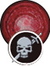 Deadly Counter (Pure Combat)
{kind=link}
Sword attacks deal 25% more damage to human opponents immune to counterattacks and monsters. In all other cases, if the attacker’s Vitality is less than 25%, a counterattack immediately triggers a finisher.
| Research needed to unlock: 2 Research Points, 1 Greater Red Mutagen |
Notes: This severely curtails combat against multiple humanoid foes, allowing you to automatically slay badly-wounded enemies quickly and with a flourish, assuming you’ve mastered the art of counterattacking by now! This helps when facing a whole horde of foes, such as the clearing of outlaw Hanses in Toussaint. It also means you needn’t worry about timing a finisher if you’re manually slaying the enemy. For foes that you can’t kill with a “finisher” (monsters, for example), any sword attack grants you 25% of extra damage. Not 25 percent though! If your weapons are currently delivering huge damage anyway, a bonus of 25 points may not be exceptional, but remember this is for every successful hit (so Whirl attacks become much more potent, for example).
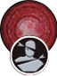 Bloodbath (Pure Combat)
{kind=link}
Each fatal blow dealt by a sword dismembers the enemy or activates a finisher. Each blow dealt by a weapon in melee combat increases Attack Power by 5% until combat ends (to a maximum of 250%). The bonus is lost if you take damage (not including damage from Toxicity).
| Research needed to unlock: Deadly Counter Mutation, 3 Research Points, 3 Greater Red Mutagens |
Notes: The dismemberment or finisher part of this Mutation are more or less for show, and essentially add a huge dollop of gore and flying appendages to every combat, and the finisher means manually timing an enemy execution is a thing of the past. But the real boon to your combat prowess comes with the percentage increase of Adrenaline Points every time you successfully land a Critical hit. This allows Abilities (and Character Archetypes) that are purposefully chosen for high critical chances become even more deadly, and combat can be lengthened as your APs are prolonged before becoming depleted. Consult Abilities and weapons that increase your Critical Hit chances to really make this mutation shine, and the blood flow!
Magic Sensibilities (Pure Signs)
{kind=link}
Signs can deal critical hits. Critical hit chance and damage depends on Sign intensity. Opponents killed by critical hits from Signs explode. Based on your current statistics, additional information is shown regarding the exact bonus.
| Research needed to unlock: 2 Research Points, 1 Greater Blue Mutagen |
Notes: This is a superb bit of “extra offense” those with a majority of Signs abilities should seriously consider using. Any Sign that already damages an enemy (including as the alternate sign modes of Yrden or Quen, as well as Aard and Igni) has a change to inflict a critical hit. To really unlock this Mutation’s
full potential, however, you must purchase and use as many Signs as possible, including the third “tier” of Sign abilities (the “Intensity”) and employ them with Greater Blue Mutagens to heighten the chances of a critical still further; you want the highest “Sign Intensity” rating in your Inventory menu that you can muster. That way you can see your foes writhe in agony before you, then detonate in a disgusting explosion of fleshy chunks!
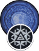 Piercing Cold (Pure Signs)
{kind=link}
When the Aard Sign is cast, it additionally has a 25% chance of freezing opponents. Opponents knocked down and frozen simultaneously die immediately. Opponents who are not frozen are dealt an additional amount of damage which scales with Aard sign intensity.
| Research needed to unlock: Magic Sensibilities Mutation, 3 Research Points, 3 Greater Blue Mutagens |
Notes: If you rely on this Sign more than most, then this Mutation is incredibly useful. When attacking groups of human-sized opponents (including airborne monsters like harpies), this can stop hordes dead in their tracks, and allow you to mow through crowds of humans in seconds, selecting only the toughest foes (that are still standing) to finish off while they attempt to free themselves from the freezing effects of your Sign. Obviously, focus all your Ability points on Aard to make the most of this Mutation, and remember that larger monsters (like Cyclopses for example) aren’t immobile when frozen, but simply slowed down by a great amount. For others, the benefits of having mutations with less specific uses (Piercing Cold is only useful in conjunction with Aard) is of greater interest.
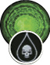 Toxic Blood (Pure Alchemy)
{kind=link}
Each time you are injured in melee combat, the attacking opponent receives damage in the amount of 1.5% of damage dealt for every point of your Toxicity level (to a maximum of 150%).
| Research needed to unlock: 2 Research Points, 1 Greater Green Mutagen |
Notes: Though this is situationally dependent, and requires a thorough use of potions and decoctions (and perhaps Abilities that allow you to shrug of the effects of being poisoned), as well as being struck by an enemy’s blow, it allows you to dish out damage by means other than your swords and Signs. Many Witchers may not wish to be struck, in which case this Mutation is not for you; but those that have fallen by being overwhelmed or attacked from the flanks or behind, and use potions and decoctions almost exclusively, will find the extra “safety” afforded by this Mutation to be well worth the damage foes inflict on you. Just ensure your Toxicity level is the highest it can be, so the wounding is worth absorbing, and obviously use healing tactics (potions, Quen, etc.) to ensure no wounds are fatal to you!
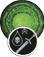 Euphoria (Pure Alchemy)
{kind=link}
“Each point of Toxicity increases damage dealt by swords and Sign Intensity by 0.75% (to a maximum of 75%).
| Research needed to unlock: Toxic Blood Mutation, 3 Research Points, 3 Greater Green Mutagens |
Notes: If you’re a well-rounded character who employs all types of offense in combat, or you’re focusing on Alchemy and your swords and Sign strikes are normally a little weaker than you’d like them to be, this Mutation solves that problem! As long as you maintain your Toxicity levels and keep them “artificially” high through Attributes designed for Alchemy-related archetypes, you can have the added flexibility of additional sword damage and Sign intensity. This added benefits can mean you’re swigging down potions and decoctions you don’t usually need, just to get the extra benefits of your swords and sorcery: Just don’t poison yourself without knowing how to keep your Toxicity levels high, and yourself alive!
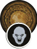 Adrenaline Rush (Combat/Signs)
{kind=link}
At start of combat, sword Attack Power and Sign Intensity increase for 30s by 30% for each foe (after first). So, when fighting 11 foes, the bonus is 300%. Once it wears off, sword Attack Power and Sign Intensity drop by 10% for each participating foe after first (modifier cannot exceed 70%). Duration: 30 seconds.
| Research needed to unlock: Bloodbath and Piercing Cold Mutations, 5 Research Points, 1 Greater Red Mutagen, 2 Greater Blue Mutagens |
Notes: Useful for characters employing both Signs and swords in combat, and those hoping combat will last no longer than 30 seconds (after which the 15 percent decrease kicks in, meaning elongated battles don’t favor this Mutation). While a “pure” archetype, relying on just combat, signs, or alchemy, has mutations with more focus in its advantages, this is a spectacular mutation to try, simply because it rewards you the higher your attack power or intensity is; 30 percent better Attack Power from a sword and bonuses that inflicts 1,000 damage is obviously better than one inflicting only 100 damage. If you’re confident in a quick victory, this offers sizable gains in attack power and Sign intensity. But if you’re more focused on a single style of combat (only using Signs, for example), other Mutations with a more specific benefit might be more to your liking.
Second Life (Combat/Signs/Alchemy)
{kind=link}
When Vitality reaches 0, you become temporarily invulnerable and regenerate 100% vitality. This effect can only be triggered once every 180 seconds (three minutes).
| Research needed to unlock: Adrenaline Rush Mutation, 10 Research Points, 1 Greater Red Mutagen, 1 Greater Blue Mutagen, 1 Greater Green Mutagen |
Notes: Quite simply, this makes you immortal, providing you can survive for three minutes after a regeneration. For those attempting New Game + on the most difficult setting, this is incredibly helpful. However, by the point you reach in your adventuring where this Mutation is accessible, you may have trained sufficiently to ensure you’re never killed in combat, making this Mutation moot. Though there’s nothing more powerful than returning from the dead, perfecting your potion intake, Sign use, swordplay, and projectile combat to ensure you’re ready for any type of combat without worrying about death, and choosing a different Mutation, is another option to consider. Or reloading your game.
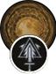 Conductors Of Magic (Combat/Signs)
{kind=link}
When drawn, magic, unique, and Witcher swords increase Sign damage dealt by 50% of their own damage dealt.
| Research needed to unlock: Piercing Cold Mutation, 5 Research Points, 1 Greater Red Mutagen, 2 Greater Blue Mutagens |
Notes: For those that care for the quality of the blades they are carrying, and also employ Signs during combat, this is an interesting Mutation to consider. Choosing the very best blades involves seeking out and having Witcher gear crafted for you; Grandmaster Griffin, Feline, Ursine, Wolven, or Manticore swords are the very best around, and coupling a steel and silver sword of a Witcher School (chosen based on your style of archetype) enables you to increase your Sign Intensity to even more potent levels. Assuming Sign Intensity is something you lack, but wish to increase, this is an excellent choice.
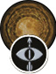Cat Eyes (Combat/Alchemy)
{kind=link}
Crossbow damage is now increased, and crossbow critical hit chance is increased by 50%. Crossbow bolts pierce and knock down or stun opponents. Opponents struck when they have full Vitality lose 15% of Vitality.
| Research needed to unlock: Bloodbath and Euphoria Mutations, 5 Research Points, 1 Greater Red Mutagen, 2 Greater Green Mutagens |
Notes: For those seeking the ultimate huntsman, partner this Mutation with the very best quality crossbow you can find, as well as bolts that are either normal or have a specific enhancement to them. The damage each bolt inflicts is technically tripled, aiming the weapon becomes even easier, and you can line up multiple targets to skewer them with a single shot!
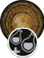Metamorphosis (Combat/Signs/Alchemy)
{kind=link}
Applying critical effects to opponents activates a random decoction for 120 seconds with no Toxicity cost. The maximum number of decoctions that can be activated simultaneously by the mutation is three. Witcher Senses help you see better in dark places.
| Research needed to unlock: Cat Eyes Mutation, 10 Research Points, 1 Greater Red Mutagen, 1 Greater Blue Mutagen, 1 Greater Green Mutagen |
Notes: There’s a reason this requires 10 Ability Points to unlock, as well as a Greater Mutagen of each color; it’s an incredibly potent Mutation that benefits those with offensive capabilities that cause critical effects to opponents. Now, for each critical you inflict, a random decoction also occurs. Can you stack normal decoctions on top of these “free” ones? Yes (as long as you don’t have more than three active at once). Having a decoction without Toxicity penalties is incredibly useful, as you can hope the benefits of the random decoction augment your attacks without worrying about after-effects, or managing potions or other decoctions[md]which is also great if you haven’t bothered with Alchemy at all. But for true Alchemists, or those that want to pick specific bonuses for each fight, the random nature of this Mutation may put you off. Remember the non-combat effect this also has; put out your torch or ignore the Cat potions in favor of using Witcher Senses to see in the dark!
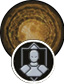 Mutated Skin (Combat/Alchemy)
{kind=link}
Each Adrenaline Point decreases damage received by 15% (to a maximum of 45%).
| Research needed to unlock: Euphoria Mutation, 5 Research Points, 1 Greater Red Mutagen, 2 Greater Green Mutagens |
Notes: If you require extra protection due to the Archetype you have created, over the armor you’ve crafted and the combat tactics you employ, then toughen up with this Mutation. Just like Toxic Blood, this presupposes you’re letting the enemy successfully strike you in order to apply the benefits of this mutation, which isn’t usually how to win fights, though this is great for maneuvering through environmental hazards like ground spikes, or shrugging off enemy hits before retaliation. Obviously, choose abilities that raise your Adrenaline Points as quickly as possible so you can keep your damage reduction up; so you end up ignoring almost half of the attack inflicted.
The Witcher® is a trademark of CD PROJEKT S. A. The Witcher game © CD PROJEKT S. A. All rights reserved. The Witcher game is based on a novel by Andrzej Sapkowski. All other copyrights and trademarks are the property of their respective owners. Learn more at thewitcher.com.